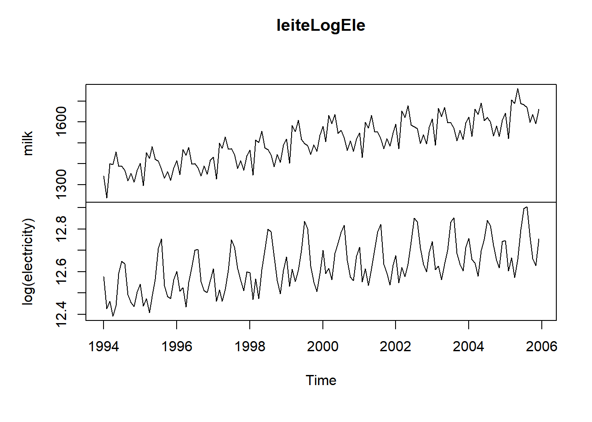
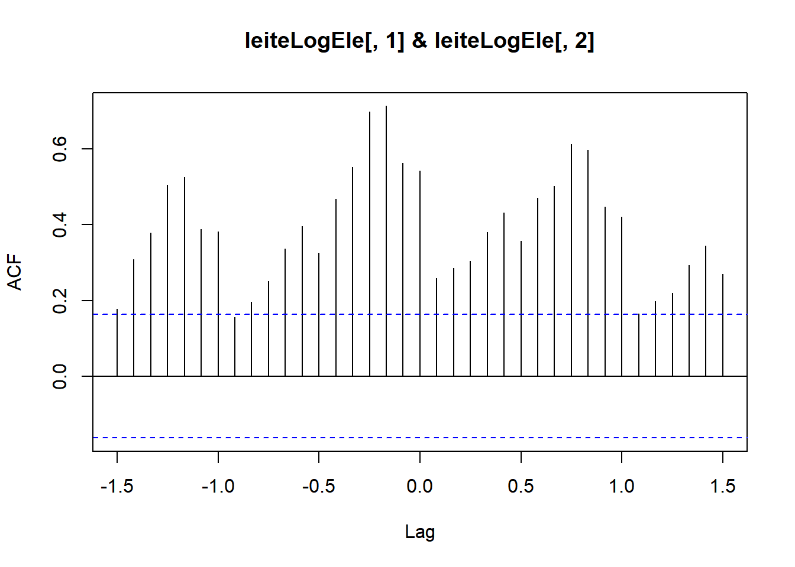
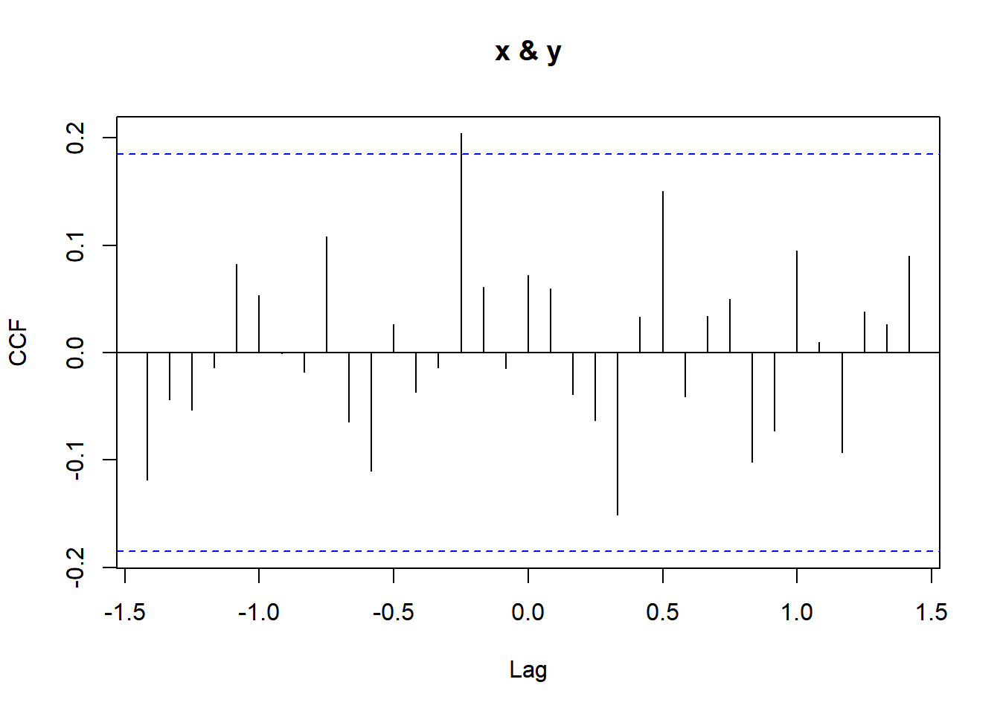
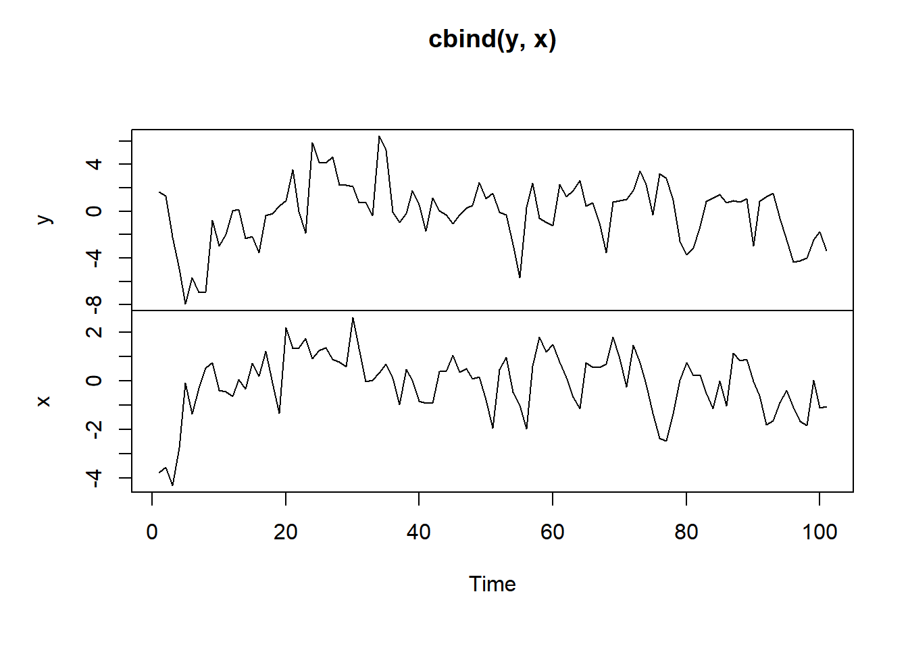
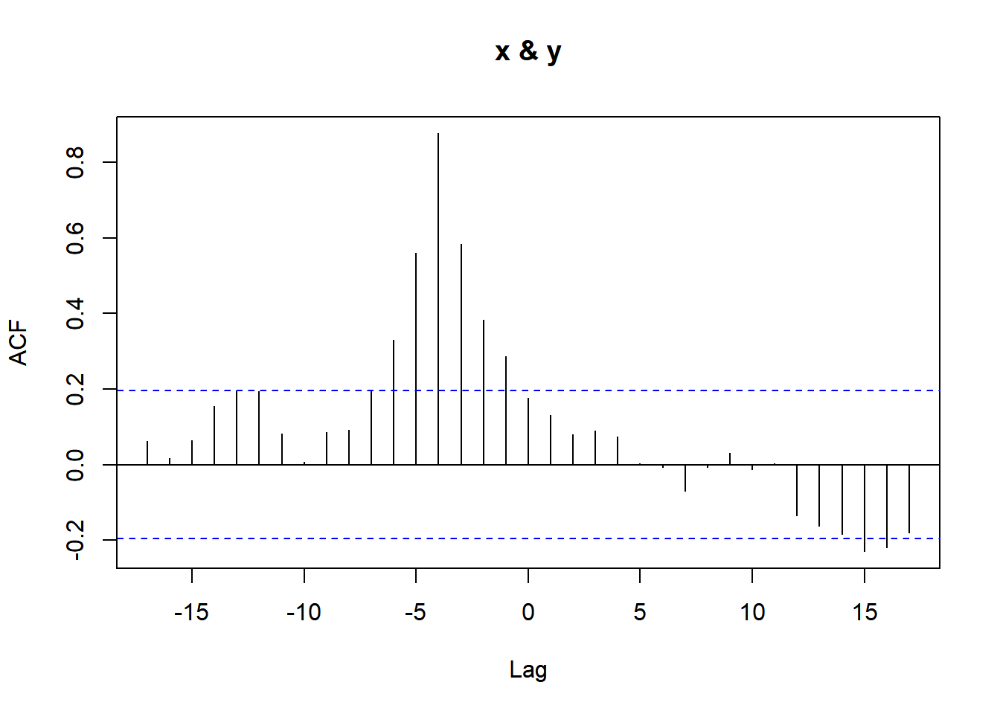
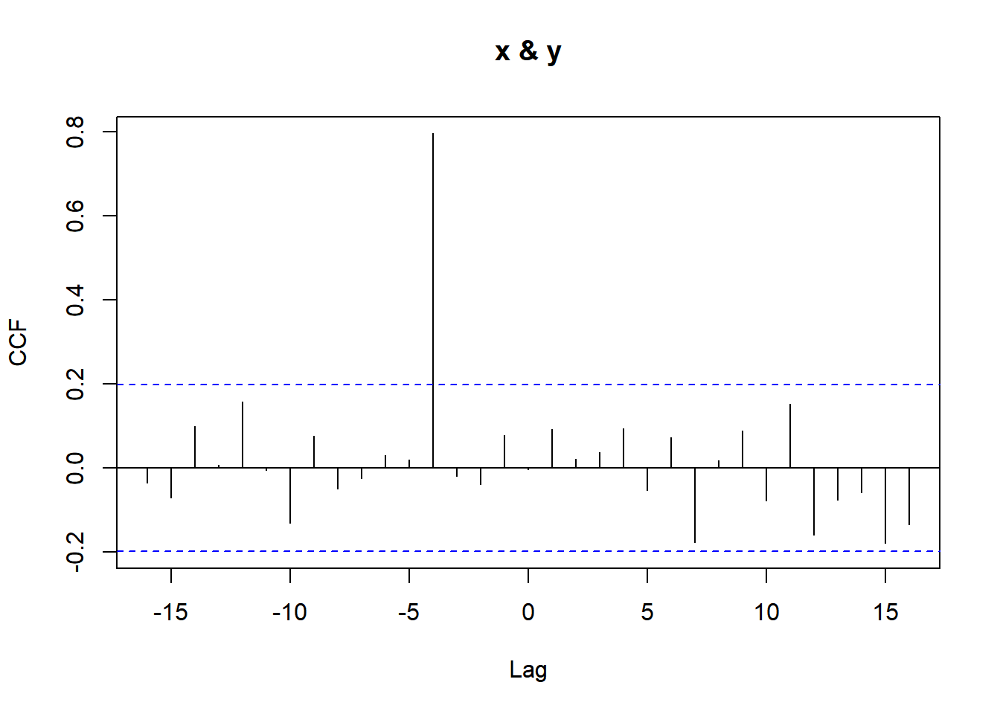
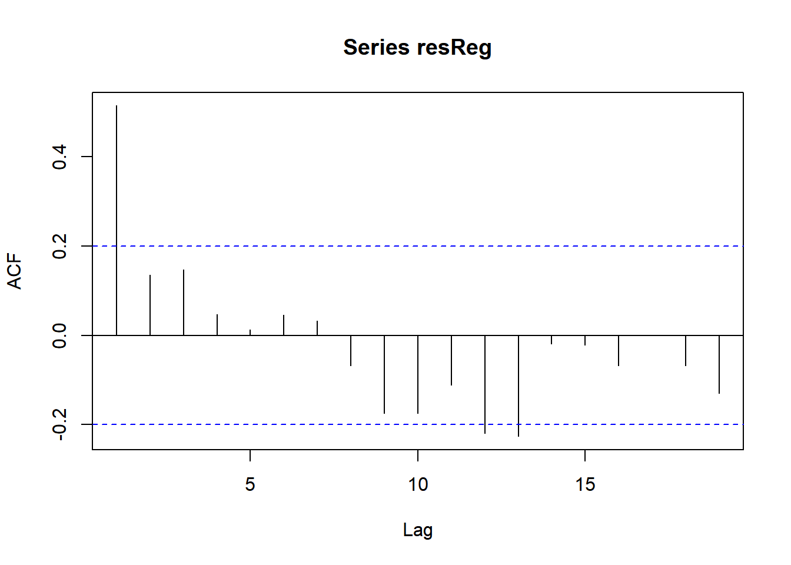
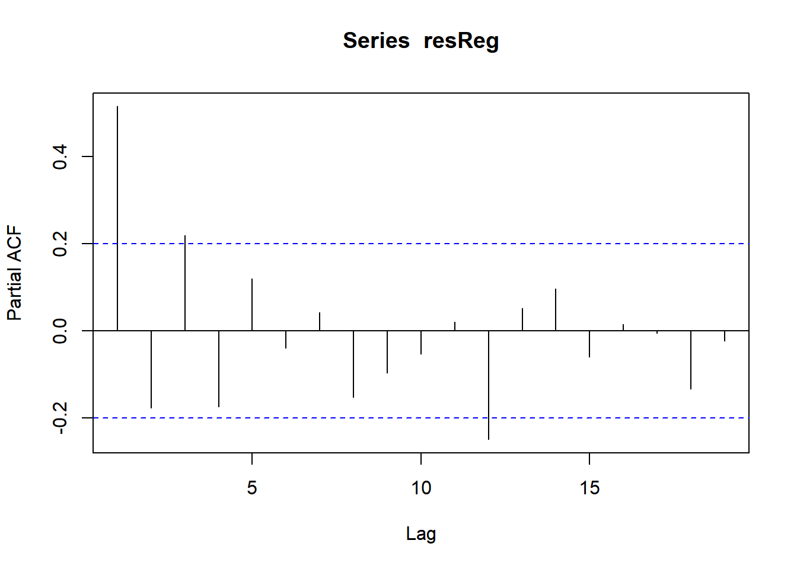

d1 <- ts.union( ldeaths, mdeaths)
head(d1) ldeaths mdeaths
[1,] 3035 2134
[2,] 2552 1863
[3,] 2704 1877
[4,] 2554 1877
[5,] 2014 1492
[6,] 1655 1249ts.union e ts.intersectConsidere novamente a série de mortes por doenças pulmonares no Reino Unido. Além da série ldeaths, o pacote datasets possui as séries mdeahts e fdeaths, que representam as mortes para os sexos masculino e feminino, respectivamente. Assim, como a primeira, essas duas séries são mensais, começando em janeiro de 1974 e terminando em dezembro de 1979.
Desde de dois objetos ts tenham o mesmo argumento frequency, é possível organizá-las lado a lado e um data.frame respeitando o tempo do registro de cada observação. Para tanto, utilizamos a função ts.union. Ilustramos isso com aas duas novas séries apresentadas.
d1 <- ts.union( ldeaths, mdeaths)
head(d1) ldeaths mdeaths
[1,] 3035 2134
[2,] 2552 1863
[3,] 2704 1877
[4,] 2554 1877
[5,] 2014 1492
[6,] 1655 1249Observe que é possível realizar a organização mesmo que os tempos de início ou fim sejam diferentes - nesse caso, NAs serão gerados quando não houverem registros. Veja o exemplo abaixo, no qual o primeiro mês da série mdeaths foi removido
mdeaths2 <- window(mdeaths, start = c(1974,2))
d2 <- ts.union( ldeaths, mdeaths2)
head(d2) ldeaths mdeaths2
[1,] 3035 NA
[2,] 2552 1863
[3,] 2704 1877
[4,] 2554 1877
[5,] 2014 1492
[6,] 1655 1249De modo análogo, podemos construir data.frame que apresenta um subconjunto das séries corresponde à interseção dos períodos registrados, utilizando a função ts.intersect
mdeaths3 <- window(mdeaths, start = c(1974,2), end = c(1974,5))
d3 <- ts.intersect( ldeaths, mdeaths3)
d3 ldeaths mdeaths3
Feb 1974 2552 1863
Mar 1974 2704 1877
Apr 1974 2554 1877
May 1974 2014 1492Sejam \(\{x_t\}\) \(\{y_t\}\) duas séries temporais. A função de covariância cruzada é dada por
\[\gamma_{r,s}(X,Y)=Cov(X_r,Y_s).\] Se as séries forem estacionárias, a covariância cruzada é função somente da diferença \(k=r-s\) e escrevemos \[\gamma_{k}(X,Y)=Cov(X_{t+k},Y_t)=Cov(X_{t},Y_{t-k}).\]
Observe que a função de covariância cruzada é ímpar, uma vez que
\[\gamma_{k}(X,Y)\neq \gamma_{-k}(X,Y).\]
Além disso, a função de autocovariância, de \(X\) por exemplo, é dada por \(\gamma_k(X,X)\).
A função de correlação cruzada é definida por \[\rho_k(X,Y)=\frac{\gamma_{k}(X,Y)}{\sqrt{Var(x)Var(y)}}\] :::{#exm-} Considere que \[y_t = \beta_0+\beta_1 x_{t-d}+\varepsilon_t,\] onde \(\varepsilon_t\) é um ruído branco com variância \(\nu\) e \(x_t\) tem distribuição normal com variância \(\sigma^2_X\) e são independentes entre si e do ruído. Como,
\[\begin{align} Var(y_t)=\beta_1^2Var(x_{t-d})+Var(\varepsilon_t)=\beta_1^2\sigma^2_X+\nu. \end{align}\] e \[\begin{align} Cov(x_t,y_{t-k})&=Cov(x_t,\beta_0+\beta_1x_{t-k-d}+\varepsilon_{t-k})\\&=\beta_1Cov(x_t,x_{t-k-d})=\left\{\begin{array}{ll}\beta_1\sigma_X^2,&\hbox{se }k=-d,\\0,&\hbox{caso contrário}\end{array}\right. \end{align}\] logo, \[\rho_k(X,Y)=\left\{\begin{array}{ll}\frac{\beta_1\sigma_X}{\sqrt{\beta_1^2\sigma_X^2+\nu}},&\hbox{ se }k=-d,\\0,&\hbox{caso contrário}\end{array}\right.\] \(\blacksquare\) :::
Para duas séries \(x_t\) e \(y_t\) observadas, de tamanho \(n\), a função de correlação cruzada amostral (CCF) é definida por \[r_k(X,Y)=\frac{\sum_{t=k+1}^n (x_t-\bar{x}_n)(y_{t-k}-\bar{y}_n)}{\sqrt{\sum_{t=1}^n(x_t-\bar{x}_n)^2}\sqrt{\sum_{t=1}^n(y_t-\bar{y}_n)^2}}\] e a regra
pode ser utilizada para detectar se Para o modelo \[y_t=\beta_0+\beta_1 x_{t-d}+\varepsilon_t,\] \(x\) é independente de \(y\) se e somente se \(\beta_1=0\). Nesse caso, \(r_k(X,Y)\) tem distribuição aproximadamente normal com média zero e variância \(1/n\) e a regra \[|r_k(X,Y)|>\frac{1,96}{\sqrt{n}}\] pode ser utilizada para detectar se a defasagem \(k\) na regressora é significativa. Entretanto, esse modelo é muito restritivo e um modelo mais geral seria
\[y_t= \beta_0+\beta_1 x_{t-d}+z_t,\] onde \(z_t\) é um processo ARIMA. Nesse caso, mesmo se \(x_t\) e \(y_t\) forem processos estacionários, a variância de \(r_k(X,Y)\) não é mais aproximadamente \(1/n\), sendo geralmente inflada. Isso implica que, ao utilizar a regra de comparar o módulo de \(r_k(X,Y)\) com \(1,96/\sqrt{n}\), é possível encontrar correlações que não fazem sentido, ou seja, espúrias.
:::{#exm-} Como exemplo de correlação espúria, considere a produção mensal de leite e a produção de energia elétrica (em escala logaritmica) nos EUA entre janeiro de 1994 e dezembro de 2006. Note como hà várias correlações significativas, quando comparadas com o limiar 1,96/\(\sqrt{n}\). Entretanto, não parece fazer sentido a relação entre produção de eletricidade e de leite.
require(TSA)Carregando pacotes exigidos: TSAWarning: package 'TSA' was built under R version 4.3.2
Attaching package: 'TSA'The following objects are masked from 'package:stats':
acf, arimaThe following object is masked from 'package:utils':
tardata(milk); data(electricity)
leiteLogEle <- ts.intersect(milk, log(electricity))
plot(leiteLogEle)
ccf( leiteLogEle[,1] , leiteLogEle[,2] ) 
Considere o modelo
\[y_t= \sum_{j=-\infty}^\infty \beta_j x_{t-j}+z_t,\] onde \(z_t\) é um processo ARIMA. Se ambos \(\{x_t\}\) e \(\{y_t\}\) são estacionários, a variância de \(r_k(X,Y)\) é aproximadamente \[\frac{1}{n}\left[1+2\sum_{k=1}^\infty \rho_k(x)\rho_k(y)\right]\] onde \(\rho_k(x)\) e \(\rho_k(y)\) são as funções de autocorrelação de \(\{x_t\}\) e \(\{y_t\}\), respectivamente. Note que, se pelo menos um dos processos for um ruído branco, então a variância será aproximadamente 1/\(n\).
Suponha então \(\{x_t\}\) é um processo ARIMA, \[\phi(B)(1-B)^d x_t=\theta(B)\epsilon_t,\] onde \(\epsilon_t\) é ruído branco. Suponha ainda que o processo é inversível, ou seja, existe \(\pi(B)\) tal que \[\pi(B)x_t=\epsilon_t.\] Então, \(\pi(B)x_t\) é um ruído branco. A aplicação do filtro \(\pi(B)\) em \(x_t\) para obter um ruído branco é denominado whitening ou prewhitening. Aplicando o filtro ao modelo no começo dessa seção, teremos
\[\pi(B)y_t= \sum_{j=-\infty}^\infty \pi(\beta)x_{t-j}+\pi(B)\varepsilon_t.\]
Como \(\pi(B)x_t\) é independente de \(\pi(B)\varepsilon_t\), a correlação cruzara entre \(\pi(B)y_t\) e \(\pi(B)x_t\) é igual à \[\rho_k(\pi(X),\pi(Y))=\beta_{-k}\sqrt{\frac{Var(\pi(B)x_t)}{Var(\pi(B)y_t)}},\] ou seja, a correlação cruzada do processo whitened é proporcional à \(\beta_{-k}\) e, sob \(H_0\), pode-se verificar a significância da defasagem comparando o módulo da correlação cruzada amostral com 1,96\(/\sqrt{n}\).
Example 12.1 Considere novamente as séries de produção de leite e eletricidade vistas na seção anterior. Ambas possuem tendência e sazonalidade, que podem ser removidas com operadores diferença para obter um processo estacionário.
estacionario <- ts.intersect(diff(diff(milk,12)),
diff(diff(log(electricity),12)))Abaixo, encontramos a correlação cruzada utilizando o processo whitened. Note que as correlações espúrias se foram e não há correlação digna de nota.
prewhiten( estacionario[,1], estacionario[,2])
Sejam \(\{x_t\}\) e \(\{y_t\}\) séries temporais onde
\[y_t=\sum_{j=-\infty}^\infty \beta_j x_{t-j}+z_t,\] onde \(z_t\) é um modelo ARIMA. Na prática, apenas um número finito dos \(\beta\)’s é diferente de zero. Seja \(\dot{x}_t=\pi(B)x_t\), onde \(\dot{x}_t\) é um processo AR(\(\infty\)). Seja \(\dot{y}_t=\pi(B)\). Então,
\[\dot{y}_t=\sum_{j=-\infty}^\infty \beta_j \dot{x}_{t-j}+\dot{z}_t,\] onde \(\dot{z}_t=\pi(B)z_t\). Como \(\dot{x}_t\) é um ruído branco e independente de \(\dot{z}_t\), a correlação cruzada entre \(\dot{x}_t\) e \(\dot{y}_t\) na defasagem \(k\) é igual à \(\beta_{-k}\sigma_{\dot{X}}/\sigma_{\dot{Y}}.\)
Abaixo, segue um roteiro para uma análise preliminar: 1. Se necessário, remova o sinal de \(x_t\) de \(y_t\), aplicando os operadores diferença necessários. 2. Encontre uma representação de um modelo AR para \(x_t\), minimizando o AIC por exemplo, estime \(\pi(B)\) 3. Obtenha \(\dot{x}_t=\pi(B)x_t\) e \(\dot{y}_t=\pi(B)y_t.\) 4. Estime a função de correlação cruzada entre \(\dot{y}_t\) e \(\dot{x}_t\). Determine \(\mathcal{K}\), um conjunto de defasagens significativas 5. Encontre os estimadores de mínimos quadrados para \(\beta\), minimizando
\[\sum_{t=1}^n z_t^2=\sum_{t=1}^n\left(y_t-\sum_{j\in\mathcal{K}}\beta_j x_{t-j}\right)^2\] 6. Estime \(z_t\) pelos resíduos
\[\hat{z}_t=y_t-\sum_{j\in\mathcal{K}}\hat{\beta}_j x_{t-j}\] e determine o modelo ARIMA estimado para \(z_t\) 7. Encontre os estimadores de máxima verossimilhança para o modelo
\[y_t=\sum_{j\in\mathcal{K}} \beta_j x_{t-j}+z_t\] onde \(z_t\) é um modelo ARIMA com a ordem encontrada no passo anterior.
Vamos simular um processo do seguinte modelo:
\[y_t = 2x_{t-4}+z_t,\] onde \(x_t\) é um processo AR(1) com \(\phi=.8\) e \(z_t\) um ARMA(1,1) com \(\phi=.2\) e \(\theta=.5\).
set.seed(123)
z <- arima.sim( list( ar = .2, ma = .5), 105)
x <- arima.sim( list(ar = .8, ma = 0), 105)
x <- ts(x, start = 1); z <- ts(z, start=1)
y <- NULL
for(t in 5:105) y[t] <- 2*x[t-4] + z[t]
x <- ts(x[5:105])
y <- ts(y[-(1:4)])
plot.ts( cbind(y,x))
Observe abaixo que a correlação cruzada apresenta a defasagem -4 significativa e conunto com várias outras, que são espúrias.
ccf(x,y)
As séries \(x_t\) e \(y_t\) já parecem ser estacionárias. Abaixo, aplicamos o whitening e as correlações espúrias desapareceram. Temos evidências de que apenas \(\beta_{4}\) é relevante.
require(TSA)
prewhiten(x,y)
Vamos ajustar o modelo de regressão \[y_t=\beta_{4}x_{t-j}\] e obter o AIC e seus resíduos.
mod <- lm( y[5:100] ~ x[1:96] -1)
AIC(mod)[1] 296.0433resReg <- residuals(mod)Vamos analisar os resíduos obtibos para determinar o modelo de \(z_t\). Abaixo, vemos indícios para o modelo ARMA(1,1).
acf(resReg)
pacf(resReg)
Vamos ajustar o modelo de regressão para séries temporais:
modFinal <- arima(y[5:100] , order = c(1,0,1), xreg = x[1:96] , include.mean = FALSE)
modFinal$aic[1] 256.901\(\blacksquare\)